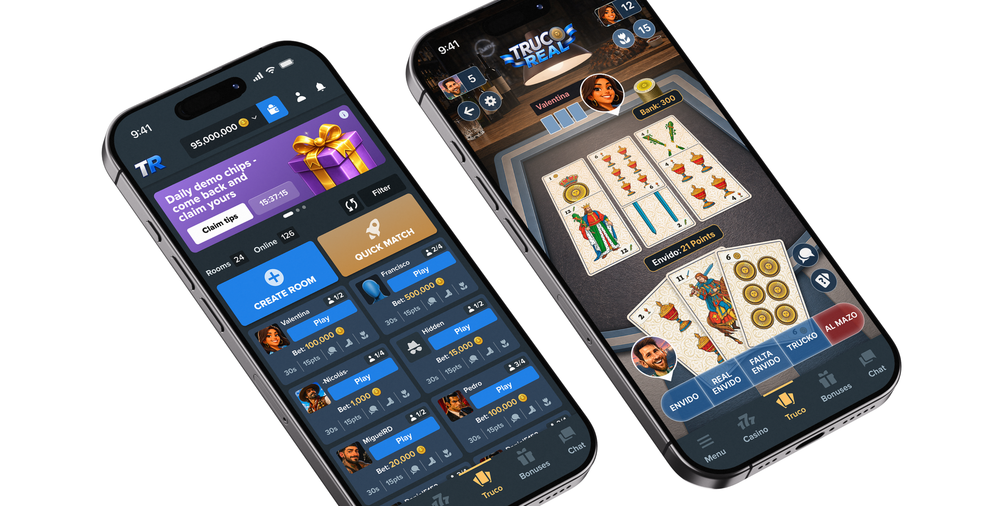
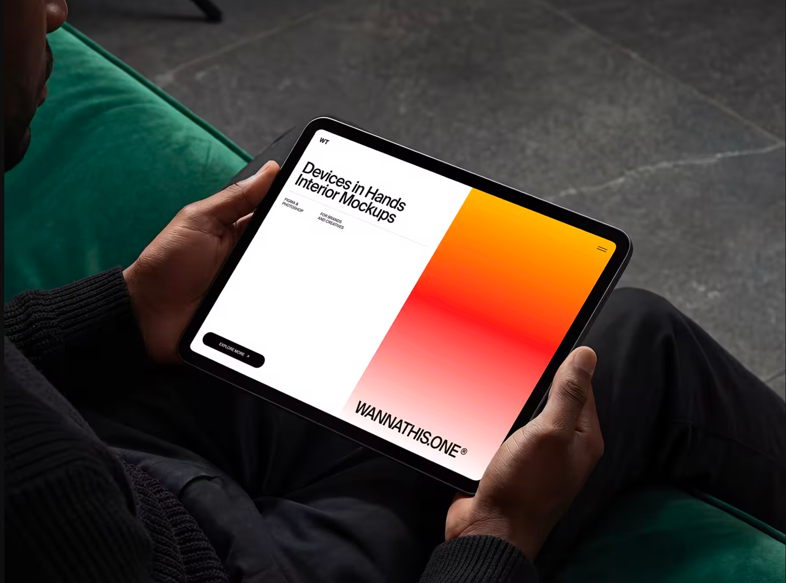
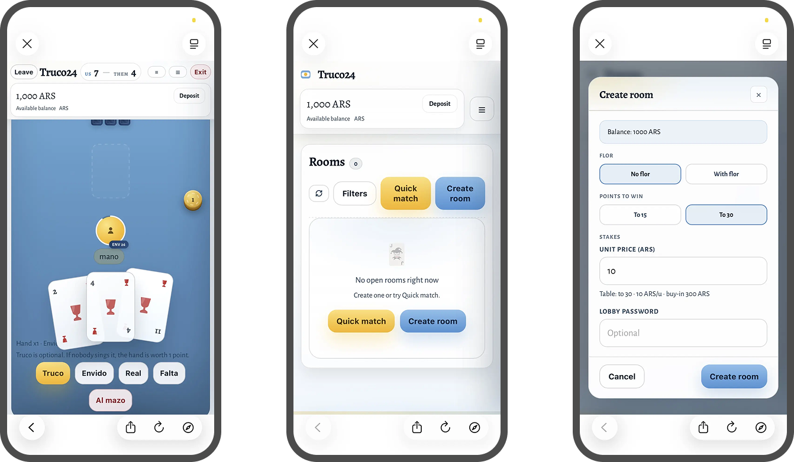
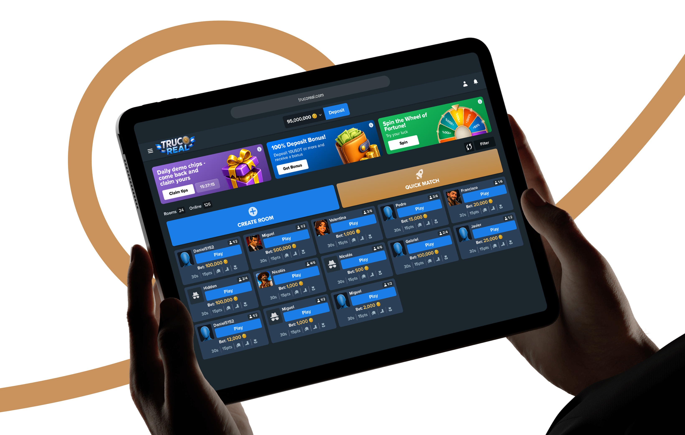
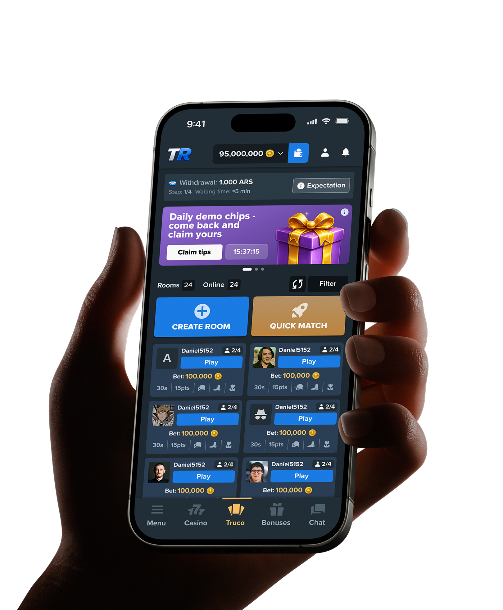
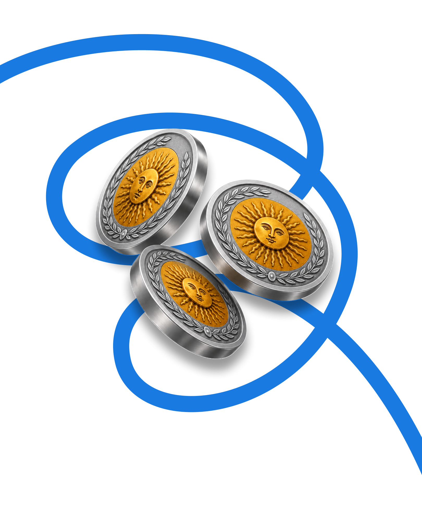

TrucoReal
Дизайн MVP платформы онлайн казино для запуска на рынок Аргентины

О проекте
TrucoReal — это онлайн-казино, ориентированное на рынок Аргентины. Главной особенностью проекта является культовая южноамериканская карточная игра Truco. Её суть строится на блефе, психологии и обмане соперников. По своей механике Truco напоминает смесь покера и дурака, благодаря чему она идеально вписывается в формат онлайн-гэмблинга.
Задача
Когда я присоединился к проекту, команда уже имела рабочий прототип с реализованной игровой логикой. Однако интерфейс создавался без единой дизайн-системы, выглядел устаревшим и не был готов к запуску MVP.
Моей задачей было полностью переработать UX, создать современный визуальный стиль и заложить основу для дальнейшего масштабирования продукта.
Моей задачей было полностью переработать UX, создать современный визуальный стиль и заложить основу для дальнейшего масштабирования продукта.

Рабочий прототип
сайт и геймплей
Разработчики быстро собрали рабочий прототип с помощью AI-инструментов и вайбкодинга, это позволило оперативно проверить игровые механики и собрать ключевые экраны платформы.
Однако интерфейс создавался без единой дизайн-системы и целостного UX-подхода, поэтому перед запуском MVP требовался комплексный анализ, переработка пользовательского опыта и унификация визуального языка.

Визуальное
направление продукта
На этапе формирования визуальной концепции были проанализированы интерфейсы онлайн-казино Stake и Bet365. Эти продукты стали основными референсами благодаря сдержанному визуальному стилю, продуманной иерархии и удобной организации большого объема контента.
Главной задачей было создать интерфейс, который не отвлекает пользователя декоративными элементами и позволяет быстро находить нужные игры, акции и основные сценарии взаимодействия. Для этого в основу концепта легли минималистичная цветовая палитра, четкая типографика, единая система отступов и акцентные элементы, используемые только для ключевых действий.



Пользовательские
сценарии
Разработчики быстро собрали рабочий прототип с помощью AI-инструментов и вайбкодинга, это позволило оперативно проверить игровые механики и собрать ключевые экраны платформы.
Приоритет
мобильной версии
На рынке Аргентины мобильные устройства являются основным способом доступа в интернет. Более 96% пользователей выходят в сеть со смартфонов.
Концепция интерфейса разрабатывалась по принципу Mobile First.
Концепция интерфейса разрабатывалась по принципу Mobile First.
Финальный дизайн
ключевых экранов
MOBILE FIRST
На рынке Аргентины мобильные устройства являются основным способом доступа в интернет.

Финальный дизайн
ключевых экранов
MOBILE FIRST
На рынке Аргентины мобильные устройства являются основным способом доступа в интернет.